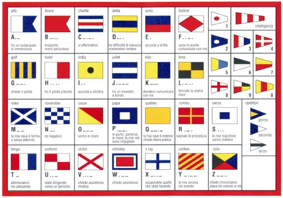

LE BANDIERE
|  |
| Una bandiera è un drappo di stoffa o di altro materiale adatto, spesso sventolato da un'asta rigida, usato simbolicamente per identificazione o per segnalazioni. Deriva da banda (colorata), cioè striscia dipinta. È comunemente impiegata per simboleggiare una nazione. Il termine bandiera è anche usato per indicarne una rappresentazione grafica su altro materiale. |
 italia
italia
|
| usa |
| ffff |